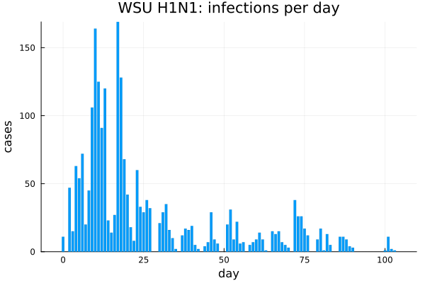
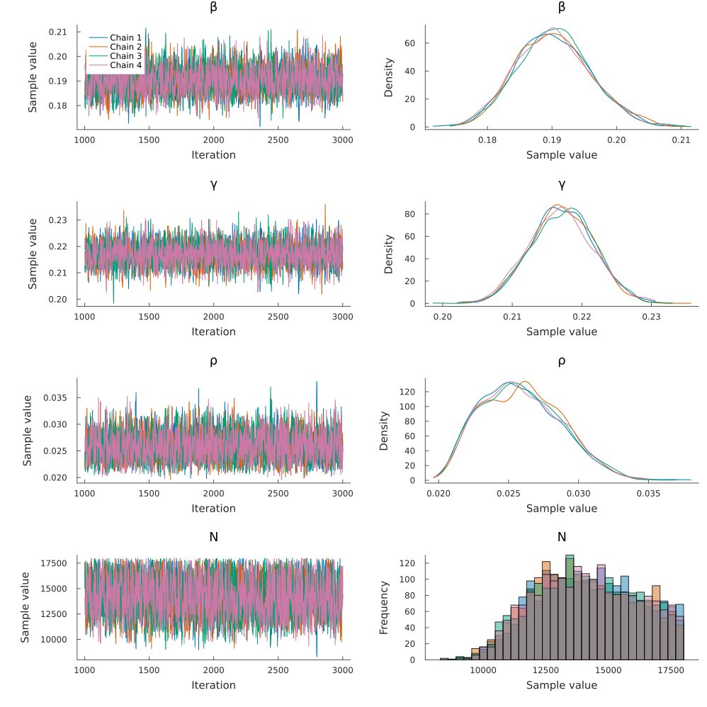
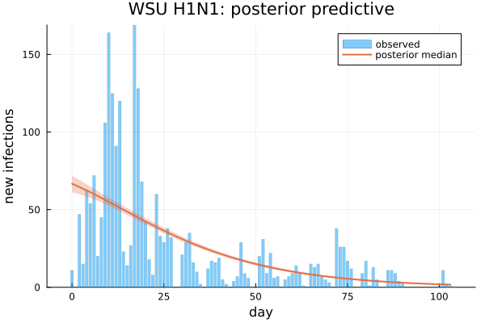
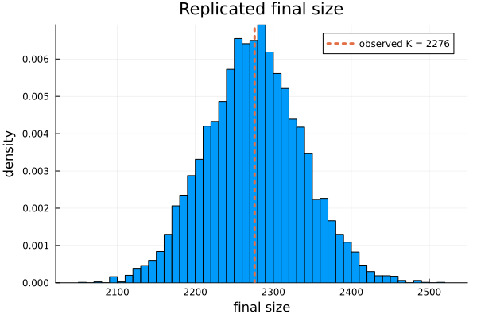
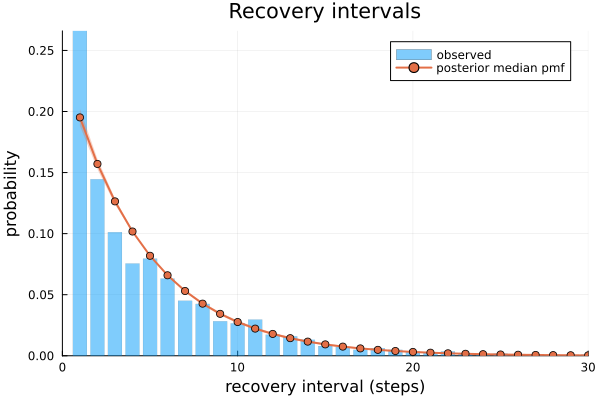
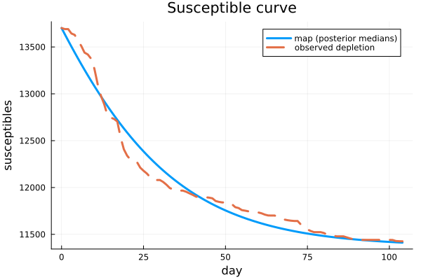
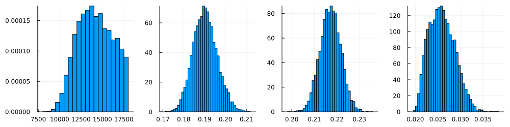

H1N1 influenza at Washington State University (2009)
The output on this page was precomputed using the manuscript's MCMC settings and is displayed without being re-evaluated. To rerun it, see Reproducibility.
This vignette fits the 2009 H1N1 influenza outbreak at Washington State University (WSU). The same data were analysed with continuous-time DSA by KhudaBukhsh et al. (2020), who introduced the concept of Survival Dynamical Systems (SDS), and whose estimates are the point of comparison.
The question. Given the infection times and recovery intervals of several cases in a closed population, what are the transmission rate β, the removal rate γ, the initially infected fraction ρ, and the size N of the population at risk? N is not known, but the campus about 18,000 students.
The model. A discrete-time SIR map with a geometric infectious period on a daily grid, with
- the final size
K ~ Binomial(N, τ), whereτis the expected fraction infected over the observation window; - the infection-day histogram
~ Multinomial(K, f), wherefis the distribution of infection days given by the map; - geometric recovery intervals, right-censored for the 13 cases still infectious at day 104.
using DiscreteDynamicSurvivalAnalysis
using CSV, DataFrames, Distributions, Turing, Random, Statistics
using Plots, StatsPlots
const FULL = get(ENV, "DDSA_FULL", "false") == "true"Inputs
WSU.csv comes from KhudaBukhsh et al. (SDS.Epidemic repository): column V1 holds the infection times and V2 the recovery times, in days. The raw data were daily case counts, but KhudaBukhsh et al. spread the infection times within each day and simulated the recovery times from an exponential distribution with rate 1/5.5 per day, so the recovery intervals are synthetic (see data/README.md).
The observation window is days 0–103: with nsteps = 104 the infections of day d fall in step d + 1, and recoveries at or after day 104 are right-censored there.
df = CSV.read(example_data_path(:wsu), DataFrame)
data = linelist(df.V1, df.V2; nsteps = 104, censor_at = 104.0)LineList(nsteps = 104, Δt = 1.0, final_size = 2276, known infection times = 2276, recovery intervals = 2276 (13 censored))bar(0:(data.nsteps - 1), data.infection_counts; label = "", xlabel = "day", ylabel = "cases",
title = "WSU H1N1: infections per day", linewidth = 0)
Model configuration
The priors are β ~ Uniform(0.01, 5), γ ~ LogNormal(log(1/5.5), 0.3) truncated to [0.01, 1] (centred on the rate used to simulate the recovery times), and ρ ~ Beta(1, 10). γ is a rate per day: the per-day removal probability is p = 1 − exp(−γ). N has a discrete uniform prior on (K + 1):18000, which is summed out of the likelihood. The infection-time distribution is floored at 1e-10 before the multinomial term.
K = data.final_size
spec = DDSAModel(infectious_period = GeometricIP(parameter = :γ),
priors = (β = Uniform(0.01, 5.0), γ = truncated(LogNormal(log(1 / 5.5), 0.3), 0.01, 1.0),
ρ = Beta(1.0, 10.0)),
population = (K + 1):18_000,
guards = NumericalGuards(f_floor = 1e-10))Fit
The manuscript ran 4 chains of 2,000 draws after 1,000 NUTS adaptation steps (default_sampler). The chains start from jittered data-based values (data_based_inits). After sampling, N is drawn once per draw from its exact conditional posterior and added to the chain.
ndraws, sampler = FULL ? (2000, default_sampler()) : (1000, NUTS(500, 0.8; max_depth = 12, Δ_max = 1000.0))
t_fit = @elapsed wsu_fit = fit_ddsa(Xoshiro(20261006), spec, data; ndraws = ndraws, nchains = 4, sampler = sampler)
wsu_fitDDSAFit(GeometricIP, 4 chains × 2000 draws, parameters: β, γ, ρ, N)Results
Posterior summaries, with the derived quantities: R0 = β / p (the reproduction number of the discrete-time map), the mean infectious period mean_ip_steps = 1/p days, and the attack rate K_over_N = K / N.
function summary_table(f; sigdigits = 4)
df = DataFrame(posterior_summary(f))
for c in names(df)[2:end]
df[!, c] = round.(df[!, c]; sigdigits = sigdigits)
end
return df
end
summary_table(wsu_fit)| Row | parameter | mean | std | q2_5 | q50 | q97_5 | ess | rhat |
|---|---|---|---|---|---|---|---|---|
| Symbol | Float64 | Float64 | Float64 | Float64 | Float64 | Float64 | Float64 | |
| 1 | β | 0.1903 | 0.005773 | 0.1795 | 0.1901 | 0.2021 | 2971.0 | 1.001 |
| 2 | γ | 0.2172 | 0.004576 | 0.2084 | 0.2172 | 0.2261 | 3350.0 | 1.001 |
| 3 | ρ | 0.02592 | 0.00284 | 0.02124 | 0.02575 | 0.03177 | 3157.0 | 1.001 |
| 4 | r | 1.0 | 0.0 | 1.0 | 1.0 | 1.0 | NaN | NaN |
| 5 | N | 14140.0 | 2017.0 | 10490.0 | 14060.0 | 17710.0 | 3157.0 | 1.001 |
| 6 | K_over_N | 0.1644 | 0.02437 | 0.1285 | 0.1618 | 0.2169 | 3157.0 | 1.001 |
| 7 | τ | 0.1643 | 0.02429 | 0.1282 | 0.1616 | 0.2168 | 3096.0 | 1.001 |
| 8 | p | 0.1952 | 0.003683 | 0.1881 | 0.1952 | 0.2023 | 3350.0 | 1.001 |
| 9 | mean_ip | 5.125 | 0.09683 | 4.942 | 5.122 | 5.315 | 3350.0 | 1.001 |
| 10 | mean_ip_steps | 5.125 | 0.09683 | 4.942 | 5.122 | 5.315 | 3350.0 | 1.001 |
| 11 | R0 | 0.9748 | 0.02335 | 0.9388 | 0.9721 | 1.026 | 3147.0 | 1.001 |
The convergence diagnostics are in the ess and rhat columns; trace plots of the sampled parameters and N:
plot(wsu_fit.chain[[:β, :γ, :ρ, :N]])
Comparison with KhudaBukhsh et al. (2020). Their SDS analysis fixed 1/γ = 5.5 days and imputed N from the final-size relation. They report N = 7,051 (90% interval 6,602–7,581), β = 0.189 and R0 = 1.06. The 90% intervals here:
d = posterior_draws(wsu_fit)
DataFrame(quantity = ["N", "β", "γ", "ρ", "R0", "mean_ip_steps"],
median = [median(x) for x in (d.N, d.β, d.γ, d.ρ, d.R0, d.mean_ip_steps)],
q5 = [quantile(x, 0.05) for x in (d.N, d.β, d.γ, d.ρ, d.R0, d.mean_ip_steps)],
q95 = [quantile(x, 0.95) for x in (d.N, d.β, d.γ, d.ρ, d.R0, d.mean_ip_steps)],
KhudaBukhsh_2020 = ["7051 [6602, 7581]", "0.189", "1/5.5 (fixed)", "", "1.06", "5.5 (fixed)"])| Row | quantity | median | q5 | q95 | KhudaBukhsh_2020 |
|---|---|---|---|---|---|
| String | Float64 | Float64 | Float64 | String | |
| 1 | N | 14064.5 | 10905.0 | 17452.1 | 7051 [6602, 7581] |
| 2 | β | 0.190096 | 0.181042 | 0.200255 | 0.189 |
| 3 | γ | 0.217184 | 0.209591 | 0.224596 | 1/5.5 (fixed) |
| 4 | ρ | 0.025754 | 0.021668 | 0.0308612 | |
| 5 | R0 | 0.97214 | 0.942059 | 1.01707 | 1.06 |
| 6 | mean_ip_steps | 5.12248 | 4.97114 | 5.28865 | 5.5 (fixed) |
The manuscript's run gave N = 14,144 (95% interval 10,359–17,727), β = 0.190, R0 = 0.97 (0.94–1.03) and a mean infectious period of 5.12 days. N is larger than the SDS estimate because the two analyses treat it differently: here it enters the Binomial final-size term and is summed out over a wide uniform prior, so its posterior is broad.
Posterior predictive checks
The expected number of new infections per day, N τ f, re-running the map at every posterior draw (scale :expected), against the observed counts. Each draw also gives a replicate final size K_rep ~ Binomial(N, τ).
pp = posterior_predictive(Xoshiro(2276), wsu_fit; ndraws = length(d.β), scale = :expected)
plot(pp; xlabel = "day", ylabel = "new infections", title = "WSU H1N1: posterior predictive")
The map follows the overall decline of incidence but not the two early peaks (days 10 and 17).
The final-size replicates are centred on the observed K (the draws of N come from P(N | K, τ), so N τ matches K by construction; the replicates show the Binomial spread plus the posterior uncertainty in N):
histogram(pp.final_size; normalize = :pdf, bins = 60, label = "", xlabel = "final size",
ylabel = "density", title = "Replicated final size")
vline!([K]; label = "observed K = $K", linewidth = 3, linestyle = :dot)
fs_q = quantile(pp.final_size, [0.025, 0.5, 0.975])
(median = fs_q[2], lower = fs_q[1], upper = fs_q[3], observed = K)(median = 2275.0, lower = 2157.0, upper = 2397.0, observed = 2276)The fitted geometric infectious period against the recorded (uncensored) recovery intervals:
plot(recovery_predictive(wsu_fit; ndraws = 500); xlims = (0, 30), title = "Recovery intervals")
The susceptible curve at the posterior medians (marked with hats), scaled to N̂, against the observed depletion (1 − ρ̂) N̂ − Σ cases (the comparison figure of KhudaBukhsh et al.). This uses the building blocks of the package: forward_map with a one-state GLCT structure.
β̂, γ̂, ρ̂, N̂ = median(d.β), median(d.γ), median(d.ρ), round(Int, median(d.N))
sol = forward_map(GLCT(dph_geometric(1 - exp(-γ̂))), β̂, ρ̂, data.nsteps)
S_obs = (1 - ρ̂) * N̂ .- [0; cumsum(data.infection_counts)]
plot(0:data.nsteps, N̂ .* susceptible_fraction(sol); label = "map (posterior medians)", linewidth = 3,
xlabel = "day", ylabel = "susceptibles", title = "Susceptible curve")
plot!(0:data.nsteps, S_obs; label = "observed depletion", linewidth = 3, linestyle = :dash)
Posterior densities of the population at risk and the sampled parameters (the panels of the manuscript figure):
plot(histogram(d.N; normalize = :pdf, bins = 40, label = "", xlabel = "N"),
histogram(d.β; normalize = :pdf, bins = 40, label = "", xlabel = "β"),
histogram(d.γ; normalize = :pdf, bins = 40, label = "", xlabel = "γ"),
histogram(d.ρ; normalize = :pdf, bins = 40, label = "", xlabel = "ρ");
layout = (1, 4), size = (1000, 250))
Substituting your own data or model
- Data. Any line list of infection and recovery times works: pass them to
linelist, withmissingfor unknown times,nstepsfor the observation window andcensor_atfor its end. Cases still infectious at the end are right-censored. - Population. A known population is an integer (
population = 18_000); an unknown one is a range (uniform prior) or anNGridwith any prior onN. - Infectious period.
GeometricIP(parameter = :γ)is the manuscript's model. A negative binomial period withrstages summed out isNegBinGLCT(1:10)(with a prior onpormean_ip). - Priors and guards. Change the
priorsnamed tuple;NumericalGuards()(the default) gives the exact likelihood without theffloor.
Runtime
(settings = FULL ? "manuscript (4 chains × 2,000 draws, 1,000 adaptation steps)" :
"reduced (4 chains × 1,000 draws, 500 adaptation steps; code check, not for results)",
threads = Threads.nthreads(), sampling_seconds = round(t_fit; digits = 1),
total_seconds = round(time() - T_START; digits = 1))(settings = "manuscript (4 chains × 2,000 draws, 1,000 adaptation steps)", threads = 10, sampling_seconds = 14.8, total_seconds = 18.5)